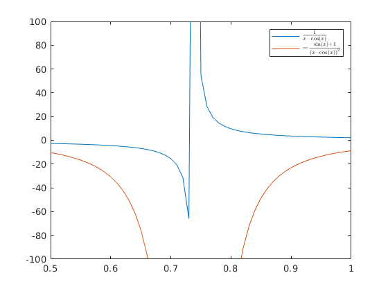

2.laboratorijas darbs
Contents
Ievads simboliskajā matemātikā
Mērķi:
- Iemācīties izmantot simboliskus mainīgus
- Iemācīties lietot vectorize,pretty,simplify
- Iemācīties veikt atvasināšanu ar diff
- Iemācīties grafiski attēlot formulas
- Iemācīties skaisti attēlot funkcijas anotāciju
- izmantojot latex
Darba programma:
syms a b x x_ans = solve(a + exp(b*x^2-a*x)==100); pretty(x_ans) syms x y y = 1/(x - cos(x)); yd = simplify(diff(y)); yv = vectorize(y); ydv = vectorize(yd); x = 0.5:0.01:1; yvm = eval(yv); ydvm = eval(ydv); plot(x,yvm,x,ydvm) ylim([-100 100]) a = latex(y); b = latex(yd); h = legend(['$',a,'$'],['$',b,'$']); set(h,'Interpreter','latex')
/ 2 \ | a + sqrt(b log(100 - a) 4 + a ) | | ------------------------------- | | 2 b | | | | 2 | | a - sqrt(b log(100 - a) 4 + a ) | | ------------------------------- | \ 2 b /
Secinājumi:
Secinājumā es iemācījos strādāt ar simboliskiem mainīgiem un grafiski attēlot funkcijas ar simboliskiem mainīgiem. Visi darba mērķi ir sasniegti.